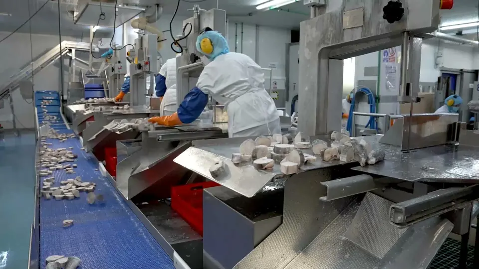
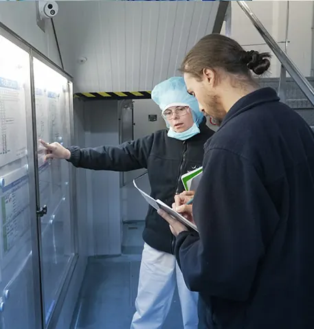

Fileteado y pelado de pescado
Desde pescado entero (HG) o desde filete, fresco o IQF.
Ver servicio: Fileteado y pelado de pescadoElaboramos productos del mar congelados para que nuestros clientes lleguen al consumidor con el mejor producto. Nos adaptamos a las necesidades de cada uno, manteniendo la calidad de su materia prima.

Realizamos una parte del proceso o el producto completo: de la materia prima al producto congelado y envasado.
Desde pescado entero (HG) o desde filete, fresco o IQF.
Ver servicio: Fileteado y pelado de pescado
Línea propia de eviscerado y troceado en anillas.
Ver servicio: Limpieza, eviscerado y tratamiento de cefalópodos
Medallones, rodajas, taquitos y tiras, también desde bloque.
Ver servicio: Corte en diferentes tamaños y formas
Dos túneles dinámicos con una capacidad de 4 t/h.
Ver servicio: Congelación IQF y glaseado
Embolsado, doble piel, vacío, estuchado y granel.
Ver servicio: Envasado en distintos tamaños y formatosUna empresa de servicios que complementa los procesos productivos de sus clientes y forma parte de su cadena de valor.
Únicamente vendemos servicios: no competimos con nuestros clientes.
Dedicamos todo nuestro tiempo a dar soluciones a las necesidades de producción de cada cliente.
Altos estándares de calidad y seguridad alimentaria, con un Departamento de Calidad que controla todo el proceso.
Almacenamiento en frío, escandallos y muestras a medida, con entrega en el plazo acordado.

Cada cliente tiene su especificación, su marca y su mercado. Trabajamos con tu materia prima, con el corte y el formato que necesitas, y guardamos la confidencialidad de tus productos.
Un Departamento de Calidad propio aplica controles rigurosos en todo el proceso productivo.
Norma internacional de seguridad alimentaria reconocida por la GFSI y exigida por la gran distribución.
Trazabilidad de productos procedentes de pesquerías sostenibles certificadas.
Trazabilidad de productos procedentes de acuicultura responsable certificada.
Reconocimiento a las prácticas de pesca y acuicultura sostenibles.
Dos fábricas en Pontevedra que suman 3.500 m², con líneas de fileteado, cefalópodo, corte, congelación IQF y envasado.
Conoce las instalaciones
Cuéntanos qué necesitas y te proponemos cómo hacerlo, con muestras si lo necesitas.